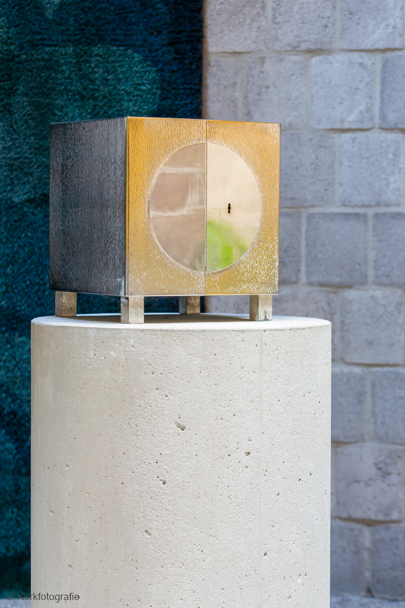
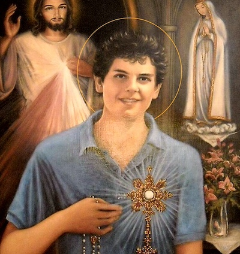

Het tabernakel vormt het hart van de kerk en bevat de Heilige Eucharistie. De jonge heilige Carlo Acutis inspireert velen; meer over hem op stichting-acutis.nl. Wie het geloof verder wil ontdekken kan deelnemen aan de Alphacursus in Den Haag: meer informatie.

This is the content for the selected item.

This is the content for the selected item.